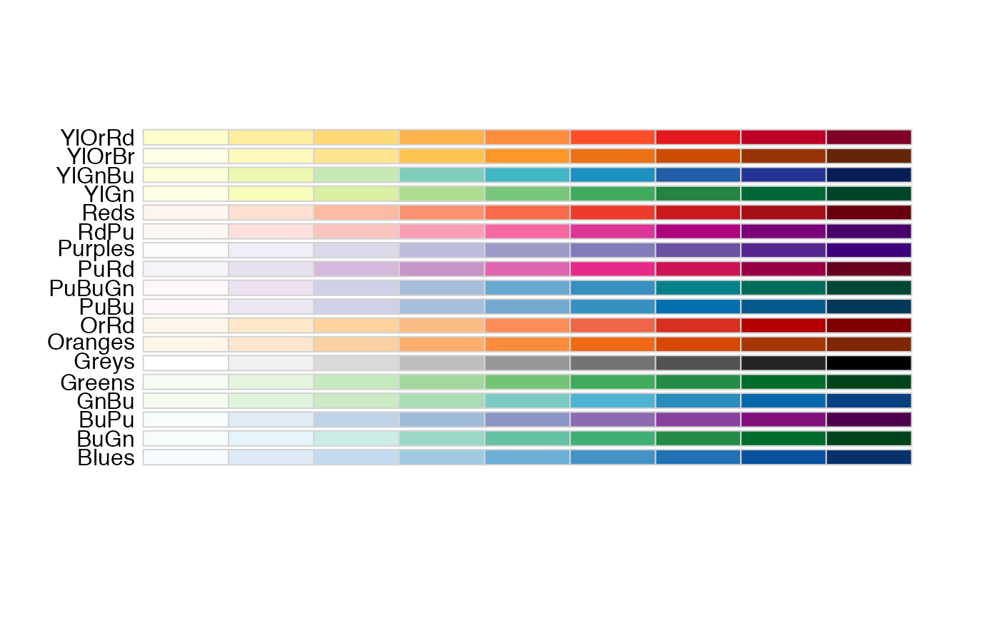
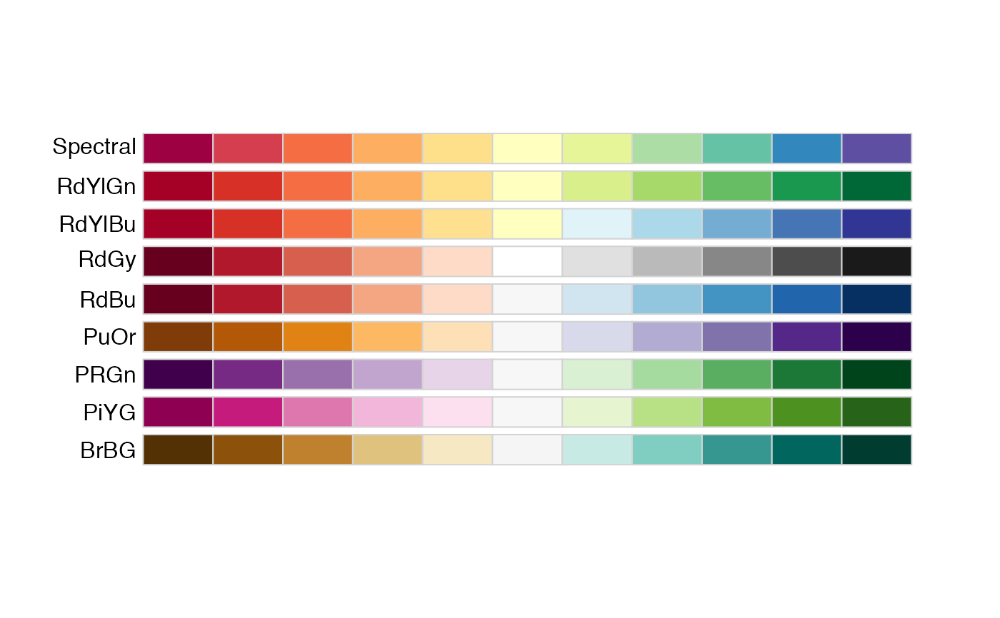
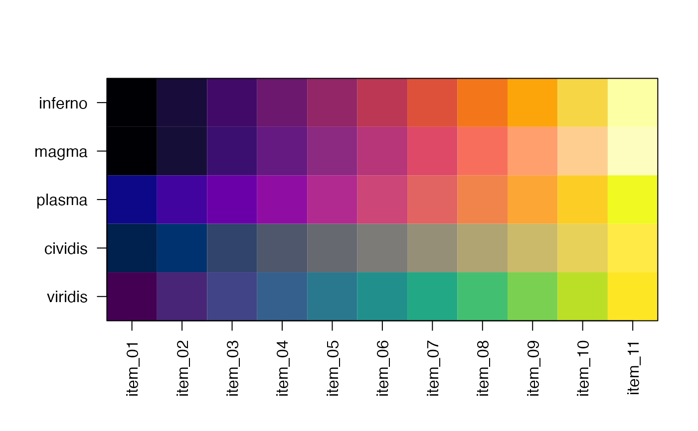
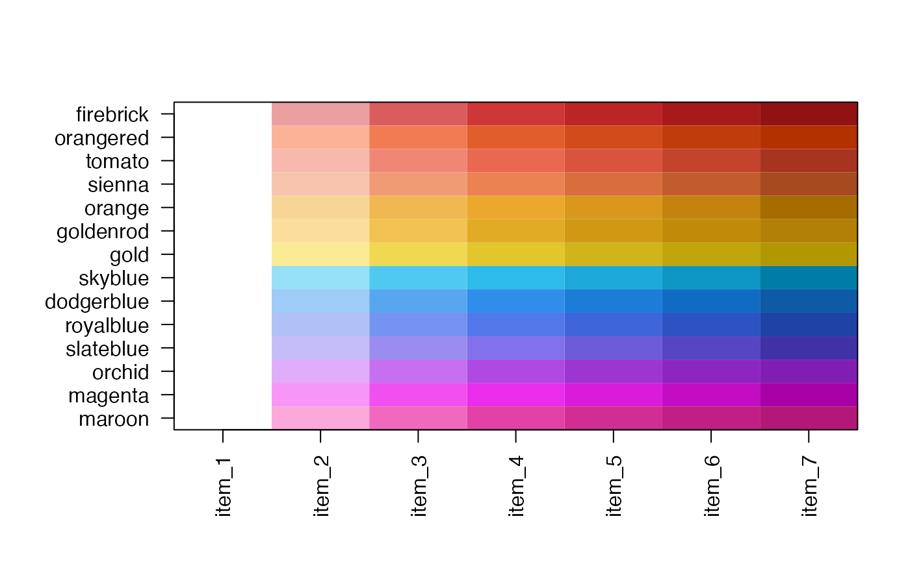
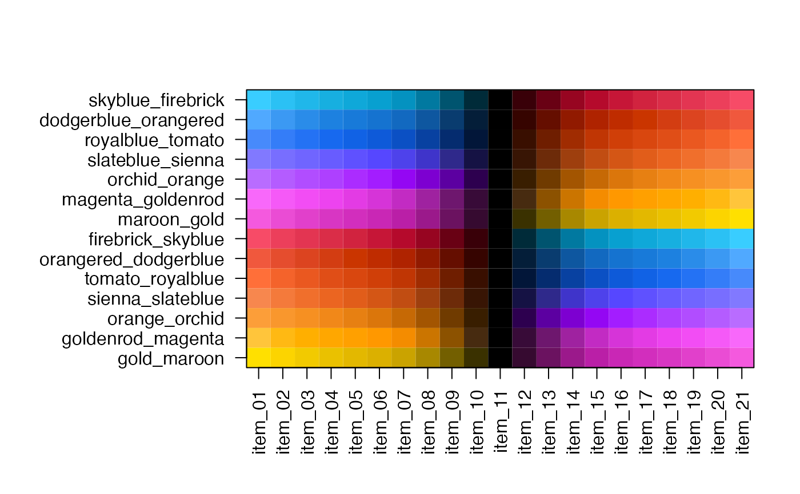

(IN DEV) Make coverage heatmaps using a simple set of config options
make_coverage_heatmaps(config_df, anno_df = NULL, ...)This function is still in development and is not yet active.
This function is intended as a wrapper function which calls
nmatlist2heatmaps() in a more organized way.
The config_df is a data.frame with one row per coverage heatmap
to produce, and all options associated with that heatmap
are stored on the same row of the data.frame.
file: character file path to the coverage matrix file
name: character string used as a name, used in difference calculations
label: character string used as a label above each heatmap
display: logical indicating whether to display each heatmap
group: character string indicating a panel group, used to share
certain settings across groups of heatmap panels. When this value
is not defined, each heatmap is defined as its own group.
color: character string that refers to a specific color gradient,
or a comma-delimited series of colors to use as a color gradient.
See below for details.
ceiling: numeric used to define the maximum numeric value
applied to the color gradient, default=0.7
ylim: numeric used to define a fixed y-axis range used for the
profile plot atop each heatmap. When this value is absent or NA
the maximum y-axis value for the group is used.
control: character string that defines an optional control name
used to subtract coverage from this row.
Colors can be define one of a few ways:
name of a color gradient
name of a single color
comma-delimited colors, either as color names, or as hex colors
in the format #FFAABB.
Color gradients from RColorBrewer are recognized. You can view
linear color gradients: RColorBrewer::display.brewer.all(type="seq")
divergent color gradients: RColorBrewer::display.brewer.all(type="div")
Color gradients are also recognized from viridis, however these are
only linear: viridis::inferno(), viridis::magma(), viridis::plasma()
viridis::cividis(),viridis::viridis().
Other jam coverage heatmap functions:
coverage_matrix2nmat(),
get_nmat_ceiling(),
nmathm_row_order(),
nmatlist2heatmaps(),
validate_heatmap_params(),
zoom_nmatlist(),
zoom_nmat()
# display RColorBrewer linear gradients
RColorBrewer::display.brewer.all(type="seq")

# display RColorBrewer divergent gradients
RColorBrewer::display.brewer.all(type="div")

# viridis linear gradients
jamba::showColors(list(
inferno=viridis::inferno(11),
magma=viridis::magma(11),
plasma=viridis::plasma(11),
cividis=viridis::cividis(11),
viridis=viridis::viridis(11)))

# jam_linear
jamba::showColors(jam_linear)

# jam_divergent
jamba::showColors(jam_divergent)
